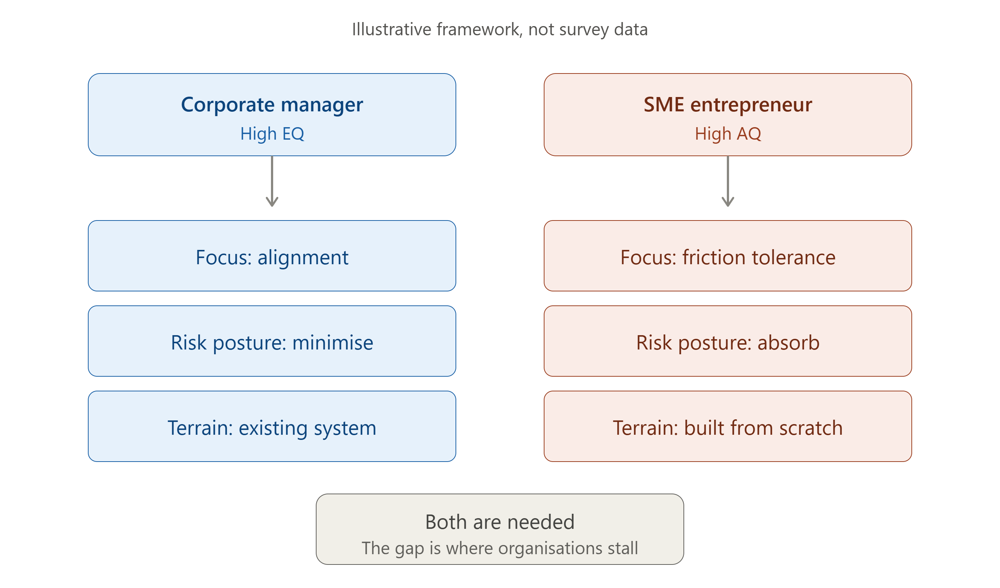
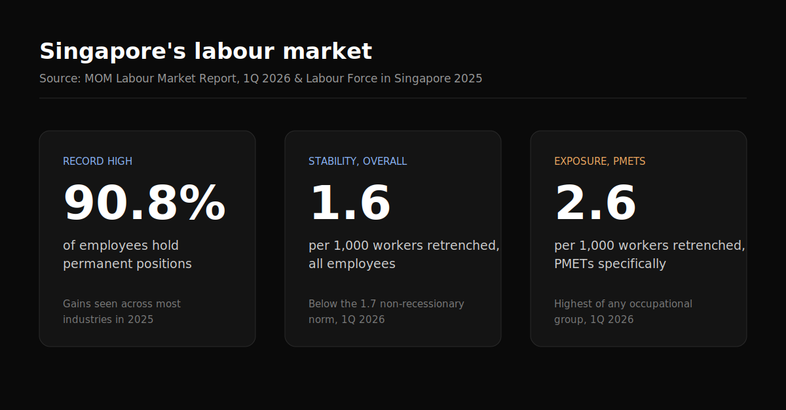

I spent 30 years in regional telecom business development before starting TalentEdge Asia. Melvyn's story wasn't just a feel-good feature to me — it hit close to home. Coming from a world built on structure and predictable metrics, I've had to consciously rewire my own mindset for the ambiguity of building from scratch.
The old "gold standard" path was clear: land a global firm role, climb the ladder, manage regional portfolios. But the ground is shifting, forcing a question: does our economy need more reliable corporate builders, or a new generation of gritty entrepreneurs?
Singapore needs both. But the two run on almost opposite operating systems.
The Corporate Engine runs on EQ. Success means alignment: reading the room, navigating the matrix, minimising volatility. Built to optimise something someone else built.
The Entrepreneurial Path runs on AQ (Adversity Quotient). Melvyn's pivot — no salary, building from zero, absorbing the friction of licensing and bidding — demands a tolerance for chaos most corporate careers never ask for.

Illustrative framework — not survey data. The two operating systems serve different terrains.
The data backs the tension, if not the myth. MOM's numbers show 90.8% of employees now hold permanent positions, a record high, and retrenchment sits at just 1.6 per 1,000, below the historical norm. Stability has never been more available. Yet PMETs remain most exposed to restructuring when it happens. Stability and precarity are coexisting, not cancelling out.

Source: MOM Labour Market Report, 1Q 2026 & Labour Force in Singapore 2025. PMET retrenchment rate of 2.6 per 1,000 is the highest of any occupational group.
I see the same collision with clients: founders who resist building systems to scale, and corporate hires who freeze without a playbook. Neither profile alone builds a lasting business. I've had to become both.
This isn't corporate vs. entrepreneur. It's about knowing which operating system a moment calls for, and building the muscle to run both.
What DISC Reveals About These Two Operating Systems
After years of working with both corporate leaders and founders, I've come to see DISC not just as a personality test — but as a diagnostic tool for understanding why some people thrive inside organisations and others are built to burn them down and build something new. Neither is better. But understanding your wiring is the first step to choosing the right path — or bridging between the two.
Let me walk through all four DISC dimensions and show you what they look like inside each profile.
D
Dominance — The Drive to Control Outcomes
Direct · Decisive · Results-oriented · Competitive
High-D Corporate Builder
Inside a corporation, high-D energy is channelled into pushing teams to meet targets, cutting through consensus paralysis, and making unpopular calls others avoid. Think of the regional sales director who walks into a QBR and immediately challenges every number on the slide. Their need for control is satisfied by the size of the team or portfolio they command — the empire within the empire.
Shadow side: High-D corporate builders often plateau when they hit a ceiling they can't dominate through — politics, a more senior D above them, or a culture that rewards consensus over performance. This is when they either leave for a startup or become difficult to manage.
High-D Entrepreneur
In a founder context, high-D energy becomes rocket fuel — the relentless drive that gets a business off the ground, pushes through rejection, and refuses to accept "that's not how it's done here." Melvyn's decision to walk away from 16 years of security and go to zero income? That's a high-D move. The market says no; the high-D founder says "next attempt."
Shadow side: High-D entrepreneurs often struggle to build teams because they can't stop controlling outcomes. They hire people and then redo their work. Scaling requires learning to trust systems over instincts — which is precisely the corporate builder skill they most need to borrow.
The high-I corporate profile is the relationship glue of large organisations. They are the ones who keep the cross-functional project alive through three restructures because everyone genuinely likes working with them. They read the matrix instinctively — who matters, who to bring in early, how to frame a proposal so the CFO feels heard. Their currency is social capital, and inside a large organisation, social capital compounds.
Shadow side: High-I corporate builders often avoid hard conversations and delay difficult decisions to preserve relationships. When an organisation needs a performance culture reset, the high-I leader can inadvertently enable mediocrity through over-harmony.
High-I Entrepreneur
The high-I entrepreneur is the natural storyteller — the founder who can walk into a room of sceptical investors or first-time customers and make them believe. They build brand before the product is ready, and often attract talent before they can pay for it. Singapore's F&B scene is full of high-I founders who built a cult following on personality before the food was even consistent.
Shadow side: High-I entrepreneurs are often the last to face the hard numbers. They optimise for enthusiasm over evidence. The pivot from "we're getting great feedback" to "we are running out of runway" is a painful one for high-I founders who've been selling the dream to themselves as much as the market.
S
Steadiness — The Anchor Under Pressure
Patient · Loyal · Reliable · Team-oriented
High-S Corporate Builder
High-S professionals are the unsung engine of every large organisation. They are the ones who show up, deliver consistently, mentor new hires, and keep institutional knowledge alive through reorgs. They are deeply loyal to their team and their function. In a stable corporate environment, the high-S builder accumulates trust slowly — and that trust becomes enormous leverage over a 10-to-15-year career.
Shadow side: High-S corporate builders resist change. When restructuring arrives, they are often the most psychologically impacted — not because they lack capability, but because their identity is so tied to the stability the organisation provided. I see this most in long-tenure PMETs facing retrenchment.
High-S Entrepreneur
The high-S entrepreneur is rarer — and often underestimated. They build slowly, serve customers with extraordinary consistency, and retain staff longer than almost any other founder profile. Think of the hawker who has been in the same kopitiam for 30 years and has a queue every morning. That reliability is a high-S superpower in disguise. The business may not scale fast, but it endures.
Shadow side: High-S entrepreneurs often stay too long in a failing model because pivoting feels like betrayal — of their customers, their team, or their own identity. Their AQ is constrained by their need for harmony. Melvyn leaving his 16-year career was an act that would be profoundly difficult for a high-S personality.
C
Conscientiousness — The Discipline of Precision
Analytical · Accurate · Systematic · Quality-driven
High-C Corporate Builder
The high-C corporate builder is the intellectual backbone of every complex organisation — the compliance officer, the senior engineer, the risk manager, the financial controller. They are the ones who find the error in the slide deck at 11pm before the board presentation. In corporates that value precision over pace — banking, law, healthcare, engineering — high-C professionals are the highest-value players in the room.
Shadow side: High-C corporate builders can become the bottleneck in fast-moving teams. Their fear of being wrong makes them slow to decide. In a world moving toward rapid iteration and AI-assisted work, the high-C instinct to perfect before publishing is increasingly costly.
High-C Entrepreneur
The high-C entrepreneur is the rarest — and the most underappreciated — of the four founder types. They build products that actually work. They test assumptions with data before spending money. They read the P&L weekly. Melvyn's methodical decision to learn the hawker trade before quitting his job has high-C hallmarks. The high-C founder rarely gets the press coverage of the high-D or high-I founder — but they build businesses that last.
Shadow side: High-C entrepreneurs often launch too late — over-researching, over-planning, waiting for certainty that the market will never provide. In a startup context, perfect is the enemy of live. Their AQ challenge isn't chaos tolerance — it's accepting that "good enough to ship" is a valid strategy.
What It Actually Takes to Transition Between Profiles
The question I get most from clients facing a career pivot isn't "which path should I take?" It's "can I actually make this work?" And the honest answer is: it depends less on your DISC profile and more on whether you're willing to consciously develop the skills your profile doesn't naturally give you.
When I left 30 years of corporate telecom to build TalentEdge Asia, I didn't stop being who I was. I had to layer on an entirely different set of capabilities — cash flow management with no treasury team, selling without a brand behind me, tolerating months of ambiguity without a KPI dashboard telling me if I was on track. That rewiring is real. And it takes longer than most people expect.
If you're a Corporate Builder considering entrepreneurship:
Skills & Aptitudes to Build
Mindset
Ambiguity toleranceFailure reframingAdversity Quotient (AQ)Identity decoupling from title
Commercial
Revenue ownership (not just P&L literacy)Direct selling without brand supportCash flow managementCustomer discovery
Operational
Doing before delegatingVendor negotiationSolo decision-makingRegulatory navigation
The biggest adjustment is psychological, not technical. Corporate builders often underestimate how much of their confidence was borrowed from the institution — the brand, the team, the title. Entrepreneurship strips all of that away. What remains is what you actually are.
If you're an Entrepreneur considering a corporate role:
Skills & Aptitudes to Build
Mindset
Patience with processConsensus navigationInstitutional EQLong-horizon thinking
Structured reportingManaging upwardMeeting disciplineTranslating founder instinct into business cases
Entrepreneurs entering corporate life often underestimate the political energy required. Moving fast breaks things — in a startup, that's a feature. In a corporate, it damages trust. The adjustment isn't about slowing down your thinking; it's about slowing down your actions until you've built the relational capital to move at entrepreneur speed within a system that wasn't built for it.
DISC Profile Comparison: Corporate Builder vs. Entrepreneur
These charts illustrate the typical DISC tendencies of each profile — not a fixed rule. Your own dual-dominant or blended profile will sit somewhere in between, which is often exactly where the most interesting careers are found.
DISC Behaviour Radar
Key Skills & Aptitudes Comparison
How to Read This
Corporate Builder — higher S and C scores reflect the patience, precision, and institutional loyalty that organisations reward over long careers. High EQ enables matrix navigation.
Entrepreneur — higher D and I scores reflect the drive and persuasion that get ventures off the ground. High AQ replaces the safety net the corporate environment provides.
The Honest Conclusion
I don't think Singapore needs more corporate builders or more entrepreneurs. I think it needs more people who understand which operating system the current moment demands — and who have done the work to develop the skills their natural profile lacks.
Melvyn's story is compelling not because he left corporate life. It's compelling because he chose a path that required him to run on a completely different operating system — and he did it with full awareness of the cost. That's not recklessness. That's a high-D/high-I move made with high-C research and high-S consistency in the trade he chose to learn.
Most career transitions fail not because the person made the wrong choice. They fail because the person underestimated the identity work involved in changing operating systems.
The DISC model doesn't tell you which path to take. It tells you what you'll need to build — in yourself — to make either path work.
So the question isn't corporate or entrepreneur. It's: which dimension of yourself are you currently under-developing?
Not sure if you're wired more like a Corporate Builder or an Entrepreneur?
Take the free DISC Leadership Snapshot — a 5-minute assessment that reveals your dominant behavioural style and how it shapes the way you lead, decide, and perform under pressure. Your instant report includes:
→Your dominant DISC profile — D, I, S, C or a dual-dominant combination, with a full description of your natural behavioural style
→Radar and bar chart visualisation — see exactly how you score across all four DISC dimensions
→Leadership insights — what your profile means for how you motivate, communicate, and handle conflict
→Career role suggestions — the roles and environments where your profile naturally thrives
→PDF download — save and share your results, no account or personal data required
CK brings 30 years of regional telecom and enterprise sales leadership to executive coaching and SME advisory. He is an ICF-aligned executive coach and certified DISC & EQ Practitioner, and the founder of TalentEdge Asia's proprietary DAEM Framework.